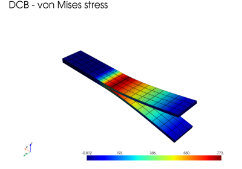
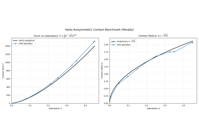
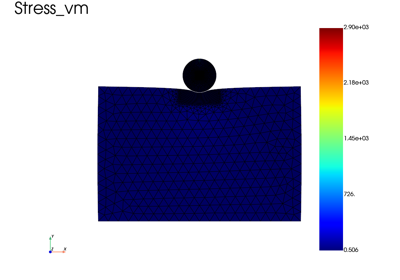
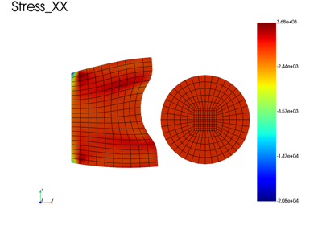
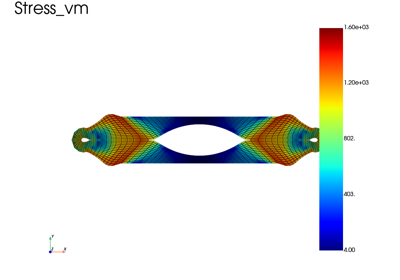
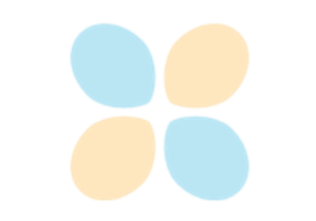
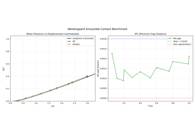

Contact and interfaces
Contact between deformable bodies and self-contact, with the penalty method and
with the Incremental Potential Contact (IPC) barrier, compared with analytical
solutions (Hertz, Westergaard) where they exist. The folder also covers
self-contact in 2D axisymmetric models (tube compression) and cohesive
interfaces: Composite double-cantilever beam with a cohesive interface opens a
zero-thickness interface governed by a fedoo.constitutivelaw.CohesiveLaw.
The IPC examples (ipc_* and the other scripts using IPCContact or
IPCSelfContact) require the optional dependency ipctk
(pip install fedoo[ipc]). Some of them also need gmsh to mesh curved
geometries.

Composite double-cantilever beam with a cohesive interface

Hertz axisymmetric contact benchmark: rigid sphere on elastic half-space

Gyroid self-contact under compression (3D, IPC method)

Gyroid compression with periodic BCs (3D, IPC method)

Elasto-plastic gyroid self-contact under compression (3D, IPC method)

Disk indentation (2D plane strain) — IPC contact with Hertz comparison

Sphere indentation (3D) — IPC contact with Hertz comparison

Self-contact — hole plate compression (2D, IPC method)

Tube compression (2Daxi): IPC versus penalty self-contact

Disk-rectangle contact (2D, penalty method)

Self-contact — hole plate compression (2D, penalty method)

Compression of a tube using 2D axisymmetric model

Westergaard sinusoidal contact benchmark: IPC vs penalty